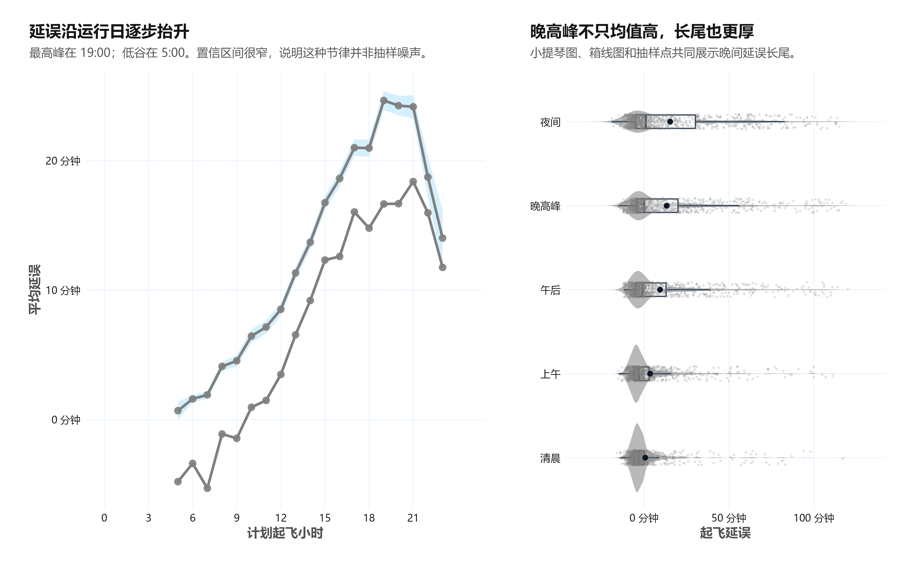

显示代码
p_hourly <- ggplot() +
geom_ribbon(
data = hourly_delay,
aes(hour, ymin = ci_low, ymax = ci_high),
fill = "#bae6fd",
alpha = 0.62
) +
geom_line(
data = hourly_long,
aes(hour, minutes, color = delay_type),
linewidth = 1.08
) +
geom_point(
data = hourly_long,
aes(hour, minutes, color = delay_type),
size = 2.4,
alpha = 0.9
) +
scale_x_continuous(breaks = seq(0, 23, 3), limits = c(0, 24.6)) +
scale_y_continuous(labels = label_number(suffix = " 分钟")) +
scale_color_manual(values = c("起飞延误" = okabe_palette["vermillion"], "到达延误" = okabe_palette["blue"])) +
labs(
title = "延误沿运行日逐步抬升",
subtitle = paste0("最高峰在 ", peak_hour$hour, ":00；低谷在 ", quiet_hour$hour, ":00。置信区间很窄，说明这种节律并非抽样噪声。"),
x = "计划起飞小时",
y = "平均延误",
color = "延误类型"
) +
theme_report()
p_rain <- ggplot(period_distribution, aes(time_period, dep_delay, fill = time_period, color = time_period))
if (has_ggdist) {
p_rain <- p_rain +
ggdist::stat_halfeye(
adjust = 0.75,
width = 0.72,
justification = -0.18,
.width = c(0.5, 0.8, 0.95),
point_interval = ggdist::median_qi,
alpha = 0.58,
slab_color = NA
) +
geom_point(
position = position_jitter(width = 0.06, height = 0),
size = 0.36,
alpha = 0.16,
show.legend = FALSE
)
} else {
p_rain <- p_rain +
geom_violin(trim = FALSE, width = 0.82, alpha = 0.55, color = NA) +
geom_boxplot(width = 0.16, outlier.shape = NA, color = "#334155", fill = "white", alpha = 0.88) +
geom_point(
position = position_jitter(width = 0.09, height = 0),
size = 0.38,
alpha = 0.16,
show.legend = FALSE
)
}
p_rain <- p_rain +
geom_pointrange(
data = period_uncertainty,
aes(y = mean_delay, ymin = ci_low, ymax = ci_high),
inherit.aes = TRUE,
color = "#0f172a",
linewidth = 0.55,
fatten = 2.1
) +
coord_flip() +
scale_y_continuous(labels = label_number(suffix = " 分钟")) +
scale_fill_manual(values = period_palette, guide = "none") +
scale_color_manual(values = period_palette, guide = "none") +
labs(
title = "晚高峰不只均值高，长尾也更厚",
subtitle = if (has_ggdist) {
"分布形状、抽样航班与均值区间共同展示晚间延误长尾。"
} else {
"小提琴图、箱线图和抽样点共同展示晚间延误长尾。"
},
x = NULL,
y = "起飞延误"
) +
theme_report()
p_hourly + p_rain + plot_layout(widths = c(1.25, 1), guides = "collect") &
theme(legend.position = "bottom")